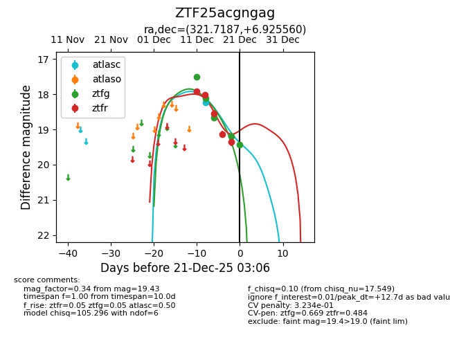
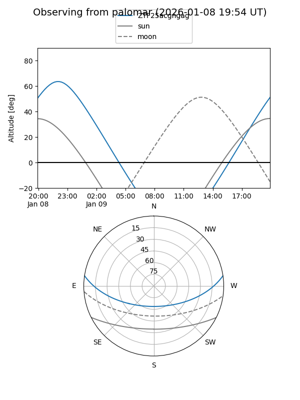
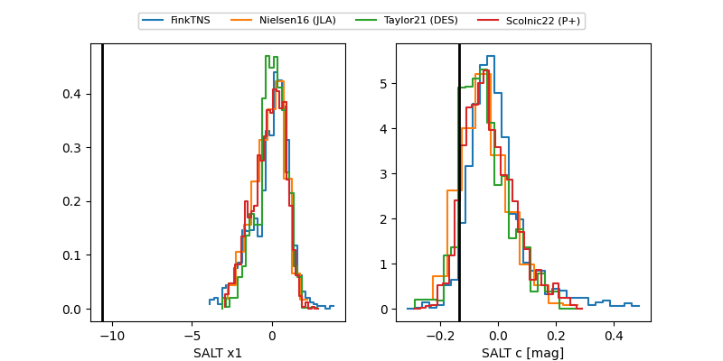

ZTF25acgngag
Target ZTF25acgngag at 2025-12-31 18:00
Aliases and brokers:
FINK: link
Lasair: link
ALeRCE: link
alt names
ZTF25acgngag (ztf,fink_ztf)
Coordinates:
equatorial (ra, dec) = 321.7187,+6.92556
equatorial (HMS+DMS) = 21:26:52.48,+06:55:32.01
galactic (l, b) = (59.7815,-29.95566)
Flags:
likely cv
Photometry:
last atlasc=18.24, ztfg=19.43, ztfr=19.66
1 atlasc, 5 ztfg, 6 ztfr detections
Lightcurve

Visibility


Additional plots
